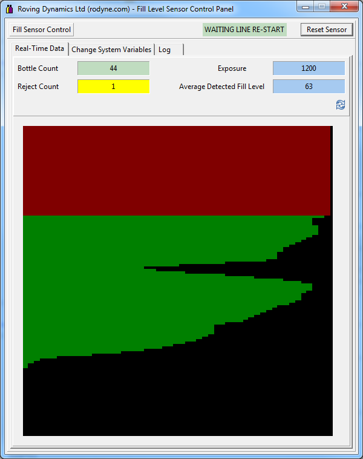

The fill Sensor Mark 4 has proven to work real well with normal white and reds but sucks a bit when using clear bottles, so it was time to rip it out and look at where this bit went wrong.
Strangely, once I got it back to the bench and popped a test clear bottle with water in front of it, it managed to calibrate and detect the levels so my thoughts that the minimum exposure was too large seemed incorrect, however it wasnt doing it all the time so something was wrong.
The current PC Control and set-up program was lacking some functionality and logging to get to the bottom of it so first thing was a minor re-write. I moved back from text communications to a byte level one which speeded up things and let me cram in a few extra bytes of data for more debugging, the new program is below

Logging
The first problem was a consequence of the new board layout. The signal display was slightly unstable, with a static image there should be a static display and there wasnt. This was simply due to the proximity of the bluetooth module directly over the sensor, moving it out of the way to a 45 degree angle restored a stable signal, crisis over.
The additional debugging information I included proved that the minimum exposure rate was not the problem, in fact it seemed to work fine on exposures down to 1000uS, exposures under 300 actually led to more problems as we sometimes got false detections for gap end, I therefore dumped the minimum exposure detection part of the calibration code and fixed the minimum exposure at 600uS. The calibration unit now simply tries 2400uS, 1200uS then 600uS and looks for 10 good passes before checking the average fill detection level.
As part of the change I removed several unused procedures and variables and tidied up a few minor bugs (added volatile prefixes to variables changed in interrupts etc).
I will test the changes this week to make sure I havent screwed up the stuff that was already working then hopefully post a final version before the new year.